건설재료시험기사 (2016-03-06 기출문제)
1과목: 콘크리트공학
1. 아래의 조건에서 콘크리트의 배합강도를 결정하면?
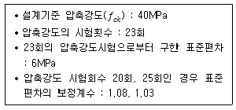
- 48.5MPa
- 49.6MPa
- 50.7MPa
- 51.2MPa
(정답률: 78%)

2. 한중 콘크리트에서 주위의 기온이 영하 6℃, 비볐을 때의 콘크리트 온도가 15℃, 비빈 후부터 타설이 끝났을 때의 시간은 2시간이 소요되었다면 콘크리트 타설이 끝났을 때 콘크리트 온도는?
- 6.7℃
- 7.2℃
- 7.8℃
- 8.7℃
(정답률: 78%)
3. 굳은 콘크리트의 압축강도 시험에서 시험조건에 따른 강도의 변화에 대한 설명으로 틀린 것은?
- 완전히 건조된 공시체가 포화된 공시체보다 강도가 크게 되는 경향이 있다.
- 재하속도가 빠를수록 강도가 크게 나타난다.
- 공시체가 같은 형상일 경우 공시체의 치수가 클수록 강도는 작게 된다.
- 편심재하를 할 경우 강도가 크게 나타난다.
(정답률: 61%)
4. 콘크리트 다지기에 대한 설명으로 틀린 것은?
- 콘크리트 다지기에는 내부진동기 사용을 원칙으로 한다.
- 내부진동기는 콘크리트로부터 천천히 빼내어 구멍이 남지 않도록 해야 한다.
- 내부진동기는 될 수 있는 대로 연직으로 일정한 간격으로 찔러 넣는다.
- 콘크리트가 한 쪽에 치우쳐 있을 때는 내부진동기로 평평하게 이동시켜야 한다.
(정답률: 83%)
5. 프리플레이스트 콘크리트에 대한 일반적인 설명으로 틀린 것은?
- 사용하는 잔골재의 조립률은 1.4 ~ 2.2 범위로 한다.
- 대규모 프리플레이스트 콘크리트를 대상으로 할 경우, 굵은 골재의 최소 치수를 작게 하는 것이 효과적이다.
- 프리플레이스트 콘크리트의 강도는 원칙적으로 재령 28일 또는 재령 91일의 압축강도를 기준으로 한다.
- 굵은 골재의 최소 치수는 15mm이상, 굵은 골재의 최대 치수는 부재단면 최소 치수의 1/4 이하, 철근 콘크리트의 경우 철근 순간격의 2/3 이하로 하여야 한다.
(정답률: 63%)
6. 고압증기양생을 한 콘크리트의 특징에 대한 설명으로 틀린 것은?
- 매우 짧은 기간에 고강도가 얻어진다.
- 황산염에 대한 저항성이 증대된다.
- 건조수축이 증가한다.
- 철근의 부착강도가 감소한다.
(정답률: 67%)
7. 설계기준강도가 21MPa인 콘크리트로부터 5개의 공시체를 만들어 압축강도 시험을 한 결과 압축강도가 아래의 표와 같았다. 품질관리를 위한 압축강도의 변동계수값은 약 얼마인가? (단, 표준편차는 불편분산의 개념으로 구할 것)
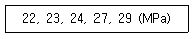
- 11.7%
- 13.6%
- 15.2%
- 17.4%
(정답률: 59%)
8. 프리스트레스트 콘크리트(PSC)를 철근콘크리트(RC)와 비교할 때 사용재료와 역학적 성질의 특징에 대한 설명으로 틀린 것은?
- 부재 전단면의 유효한 이용
- 부재의 탄성과 복원성이 뛰어남
- 긴장재로 인한 자중과 전단력의 증가
- 고강도 콘크리트와 고강도 강재의 사용
(정답률: 80%)
9. 숏크리트의 특징에 대한 설명으로 틀린 것은?
- 임의 방향으로 시공 가능하나 리바운드 등의 재료손실이 많다.
- 용수가 있는 곳에서도 시공하기 쉽다.
- 노즐맨의 기술에 의하여 품질, 시공성 등에 변동이 생긴다.
- 수밀성이 적고 작업 시에 분진이 생긴다.
(정답률: 88%)
10. 시방배합상의 잔골재의 양은 500kg/m3 이고 굵은골재의 양은 1000kg/m3이다. 표면수량은 각각 5%와 3%이었다. 현장배합으로 환산한 잔골재와 굵은 골재의 양은?
- 잔골재 : 525kg/m3, 굵은골재 : 1030kg/m3
- 잔골재 : 475kg/m3, 굵은골재 : 970kg/m3
- 잔골재 : 470kg/m3, 굵은골재 : 975kg/m3
- 잔골재 : 520kg/m3, 굵은골재 : 1025kg/m3
(정답률: 77%)
11. 프리스트레스트 콘크리트에 대한 일반적인 설명으로 틀린 것은?
- 굵은 골재 최대 치수는 보통의 경우 40mm를 표준으로 한다.
- 프리스트레스트 콘크리트그라우트에 사용하는 혼화제는 블리딩 발생이 없는 타입의 사용을 표준으로 한다.
- 그라우트되는 다수의 강선, 강연선 또는 강봉을 배치하기 위한 덕트는 내부 단면적이 긴장재 단면적의 2배 이상이어야 한다.
- 프리텐션 방식에서 프리스트레싱할 때의 콘크리트의 압축강도는 30MPa이상이어야 한다.
(정답률: 54%)
12. 아래 표와 같은 조건의 시방배합에서 굵은골재의 단위량은 약 얼마인가?
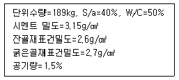
- 945kg
- 1015kg
- 1⑤2kg
- 1095kg
(정답률: 57%)
13. 경량골재 콘크리트의 배합에 대한 설명으로 틀린 것은?
- 경량골재 콘크리트는 공기연행 콘크리트로 하는 것을 원칙으로 한다.
- 슬럼프는 일반적인 경우 대체로 50~180mm를 표준으로 한다.
- 경량골재 콘크리트의 공기량은 일반 골재를 사용한 콘크리트보다 1% 정도 작게 하여야 한다.
- 경량골재 콘크리트의 시방배합의 표시는 골재의 질량으로 표시하지 않고 함수상태에 따라 변화가 없는 절대용적으로 표시하여야 한다.
(정답률: 66%)
14. 콘크리트의 배합에서 굵은 골재의 최대치수를 증대시켰을 경우 발생되는 사항으로 틀린 것은?
- 단위시멘트량이 증가한다.
- 공기량이 작아진다
- 잔골재율이 작아진다.
- 단위수량을 줄일 수 있다.
(정답률: 69%)
15. 콘크리트 타설에 대한 설명 중 옳지 않은 것은?
- 콘크리트를 2층 이상으로 나누어 타설할 경우, 상층의 콘크리트 타설은 원칙적으로 하층의 콘크리트가 굳기 시작하기 전에 해야 한다.
- 콘크리트 타설 도중에 표면에 떠올라 고인 블리딩 수가 있을 경우에는 표면에 도랑을 만들어 제거하여야 한다.
- 한 구획 내의 콘크리트는 타설이 완료될 때까지 연속해서 타설해야 한다.
- 콘크리트는 그 표면이 한 구획 내에서는 거의 수평이 되도록 타설하는 것을 원칙으로 한다.
(정답률: 88%)
16. 콘크리트에 발생되는 크리프에 대한 설명 중 틀린 것은?
- 시멘트량이 많을수록 크리프는 증가한다.
- 온도가 낮을수록 크리프는 증가한다.
- 조강 시멘트는 보통 시멘트보다 크리프가 작다.
- 부재의 치수가 작을수록 크리프는 증가한다.
(정답률: 62%)
17. 페놀프탈레인 1% 알콜용액을 구조체 콘크리트 또는 코어공시체에 분무하여 측정할 수 있는 것은?
- 균열폭과 깊이
- 철근의 부식정도
- 콘크리트의 투수성
- 콘크리트의 탄산화깊이
(정답률: 80%)
18. 콘크리트 비비기에 대한 설명으로 틀린 것은?
- 강제식 믹서를 사용하여 비비기를 할 경우 비비기 시간은 최소 1분 이상을 표준으로 한다.
- 비비기는 미리 정해둔 비비기 시간의 5배 이상 계속하지 않아야 한다.
- 비비기를 시작하기 전에 미리 믹서 내부를 모르타르로 부착시켜야 한다.
- 연속믹서를 사용할 경우, 비비기 시작 후 최초에 배출되는 콘크리트는 사용하지 않아야 한다.
(정답률: 88%)
19. 직경이 150mm이고 높이가 300mm인 원주형 콘크리트 공시체를 쪼갬인장 강도 시험한 결과 최대 강도가 141.4kN 이었다. 이 공시체의 인장 강도는?
- 6.3MPa
- 3.1MPa
- 8.0MPa
- 2.0MPa
(정답률: 73%)
20. 잔골재율에 대한 설명 중 틀린 것은?
- 골재 중 5mm체를 통과한 부분은 잔골재로 보고, 5mm체에 남는 부분을 굵은골재로 보아 산출한 잔골재량의 전체 골재량에 대한 절대용적비를 백분율로 나타낸 것을 말한다.
- 잔골재율이 어느 정도보다 작게 되면 콘크리트가 거칠어지고, 재료분리가 일어나는 경향이 있다.
- 잔골재율은 소요의 워커빌리티를 얻을 수 있는 범위에서 단위수량이 최대가 되도록 한다.
- 잔골재율을 작게하면 소요의 워커빌리티를 얻기 위한 단위수량이 감소되고 단위 시멘트량이 적게 되어 경제적이다.
(정답률: 63%)
2과목: 건설시공 및 관리
21. 옹벽 등 구조물의 뒤채움 재료에 대한 조건으로 틀린 것은?
- 투수성이 있어야 한다.
- 압축성이 좋아야 한다.
- 다짐이 양호해야 한다.
- 물의 침입에 의한 강도 저하가 적어야 한다.
(정답률: 74%)
22. 도로 토공을 위한 횡단 측량 결과가 아래 그림과 같을 때 Simpson 제 2법칙에 의해 횡단면적을 구하면? (단, 그림의 단위는 m)
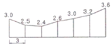
- 50.74m2
- 54.27m2
- 57.63m2
- 61.35m2
(정답률: 65%)
23. 교량 받침 계획에 있어서 고정받침을 배치하고자 할 때 고려하여야 할 사항으로 틀린 것은?
- 고정하중의 반력이 큰 지점
- 종단 구배가 높은 지점
- 수평반력 흡수가 가능한 지점
- 가동받침 이동량을 최소화할 수 있는 지점
(정답률: 67%)
24. 아스팔트 콘크리트포장의 소성변형(rutting)에 대한 설명으로 틀린 것은?
- 아스팔트 콘크리트포장의 노면에서 차의 바퀴가 집중적으로 통과하는 위치에 생기는 도로연장 방향으로의 변형을 말한다.
- 하절기의 이상 고온 및 아스팔트량이 많을 경우 발생하기 쉽다.
- 침입도가 작은 아스팔트를 사용하거나 골재의 최대치수가 큰 경우 발생하기 쉽다.
- 변형이 발생한 위치에 물이 고일 경우 수막현상 등을 일으켜 주행 안전성에 심각한 영향을 줄 수 있다.
(정답률: 81%)
25. 유토곡선(mass curve)을 작성하는 목적으로 거리가 먼 것은?
- 토량을 배분하기 위해서
- 토량의 평균 운반거리를 산출 위해서
- 절 · 성토량을 산출하기 위해서
- 토공기계를 결정하기 위해서
(정답률: 70%)
26. 아스팔트 포장의 시공에 앞서 실시하는 시험포장의 결과로 얻어지는 사항과 관계가 없는 것은?
- 혼합물의 현장배합 입도 및 아스팔트 함량의 결정
- 플랜트에서의 작업표준 및 관리목표의 설정
- 시공관리 목표의 설정
- 포장두께의 결정
(정답률: 75%)
27. 가물막이 공법은 크게 중력식 공법과 널말뚝(sheet pile)식 공법으로 나눌 수 있다. 다음 중 중력식 가물막이 공법이 아닌 것은?
- Dam식
- Box식
- Cell식
- Caisson식
(정답률: 62%)
28. 품질관리를 위한 관리 사이클의 4단계를 설명한 것으로 틀린 것은?
- P - Plan(計劃)
- S - Sample(絹本)
- D - Do
- C – Check
(정답률: 83%)
29. 터널 시공시 pilot tunnel의 역할은?
- 지질조사 및 지하수 배제
- 측량을 위한 예비터널
- 환기시설
- 기자재 운반
(정답률: 64%)
30. 아래의 표에서 설명하는 준설선은?
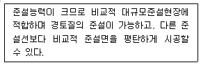
- 디퍼 준설선
- 버킷 준설선
- 쇄암선
- 그래브 준설선
(정답률: 72%)
31. 흙막이 구조물에 설치하는 계측기 중 아래의 표에서 설명하는 용도에 맞는 계측기는?
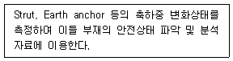
- 지중수평변위계
- 간극수압계
- 하중계
- 경사계
(정답률: 71%)
32. 보통 토사 27000m3을 흙쌓기 하고자 할 때 토취장의 굴착 토량(A)과 운반토량(B)을 구하면? (단, L=1.25, C=0.9)
- A = 24300m3, B = 33750m3
- A = 30000m3, B = 33750m3
- A = 24300m3, B = 37500m3
- A = 30000m3, B = 37500m3
(정답률: 72%)
33. 암거의 배열방식 중 여러개의 흡수구를 1개의 간선집수거 또는 집수지거로 합류시키게 배치한 방식은?
- 차단식
- 자연식
- 빗식
- 사이펀식
(정답률: 68%)
34. 아래 표와 같은 조건에서 불도저로 압토와 리핑 작업을 동시에 실시할 때 시간당 작업량은?
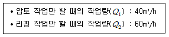
- 24m3/h
- 37m3/h
- 40m3/h
- 50m3/h
(정답률: 79%)
35. 댐에 대한 일반적인 설명으로 틀린 것은?
- 필댐(fill dam)은 공사비가 콘크리트 댐보다 적고 홍수 시의 월류에도 대단히 안전하다.
- 중력식 댐은 그 자중으로 수압에 저항하고 기초의 전단 강도가 댐의 안전상 중요하다.
- 중공댐은 비교적 높이가 높은 댐이고 U자형의 넓은 계곡인 경우 콘크리트량이 절약되어 유리하다.
- 아치댐은 양안의 교대(abutment) 기초 암반의 두께와 강도가 중요하다.
(정답률: 68%)
36. 큰 중량의 중추를 높은 곳에서 낙하시켜 지반에 가해지는 충격에너지와 그 때의 진동에 의해 지반을 다지는 개량공법으로 대부분의 지반에 지하수위와 관계없이 시공이 가능하고 시공 중 사운딩을 실시하여 개량효과를 점검하는 시공법은?
- 지하연속벽공법
- 폭파다짐공법
- 바이브로플로테이션공법
- 동다짐공법
(정답률: 73%)
37. 지름이 30cm, 길이가 12m인 말뚝을 3ton의 증기 해머로 1.5m를 낙하시켜 박는 말뚝 타입 시험에서 1회 타격으로 인한 최종침하량은 5mm이었다. 이때 말뚝의 허용지지력은 약 얼마인가? (단, 엔지니어링뉴스 공식으로 단동식 증기해머 사용)
- 100 ton
- 120 ton
- 140 ton
- 160 ton
(정답률: 53%)
38. 샌드드레인(sand drain) 공법에서 영향원의 지름을 de, 모래말뚝의 간격을 d라 할 때 정사각형의 모래말뚝 배열 식으로 옳은 것은?
- de=1.0d
- de=1.⑤d
- de=1.08d
- de=1.13d
(정답률: 82%)
39. 아스팔트 콘크리트포장과 비교한 시멘트 콘크리트포장의 특성에 대한 설명으로 틀린 것은?
- 내구성이 커서 유지관리비가 저렴하다.
- 표층은 교통하중을 하부층으로 전달하는 역할을 한다.
- 국부적 파손에 대한 보수가 곤란하다.
- 시공 후 충분한 강도를 얻는데까지 장시간의 양생이 필요하다.
(정답률: 61%)
40. 버킷의 용량이 0.6m3, 버킷계수가 0.9, 토량변화율(L)=1.25, 작업효율이 0.7, 사이클타임이 25sec인 파워쇼벨의 시간당 작업량은?
- 68.0m3/h
- 61.2m3/h
- 54.4m3/h
- 43.5m3/h
(정답률: 64%)
3과목: 건설재료 및 시험
41. 합판에 대한 설명으로 틀린 것은?
- 합판의 종류에는 섬유판, 조각판, 적층판 및 강화적층재 등이 있다.
- 로터리 베니어는 증기에 가열 연화되어진 둥근 원목을 나이테에 따라 연속적으로 감아 둔 종이를 펴는 것과 같이 엷게 벗겨낸 것이다.
- 슬라이스트 베니아는 끌로서 각목을 얇게 절단한 것으로 아름다운 결을 장식용으로 이용하기에 좋은 특징이 있다.
- 합판의 특징은 동일한 원재로부터 많은 정목판과 나무결 무늬판이 제조되며, 팽창 수축등에 의한 결점이 없고 방향에 따른 강도 차이가 없다.
(정답률: 62%)
42. 실리카 퓸을 혼합한 콘크리트에 대한 설명으로 틀린 것은?
- 수화열을 저감시킨다.
- 강도증가 효과가 우수하다.
- 재료분리와 블리딩이 감소된다.
- 단위수량을 줄일수 있고 건조수축 등에 유리하다.
(정답률: 62%)
43. 아스팔트의 침입도 시험기를 사용하여 온도 25℃로 일정한 조건에서 100g의 표준침이 3mm 관입했다면, 이 재료의 침입도는?
- 3
- 6
- 30
- 60
(정답률: 73%)
44. 응결지연제의 사용목적으로 틀린 것은?
- 거푸집의 조기탈형과 장기강도 향상을 위하여 사용한다.
- 시멘트의 수화반응을 늦추어 응결과 경화시간을 길게 할 목적으로 사용한다.
- 서중콘크리트나 장거리 수송 레미콘의 워커빌리티 저하방지를 도모한다.
- 콘크리트의 연속타설에서 작업이음을 방지한다.
(정답률: 65%)
45. 역청유제 중 유화제로서 벤토나이트와 같이 물에 녹지 않는 광물질을 수중에 분산시켜 이것에 역청제를 가하여 유화시킨 것은?
- 음이온계 유제
- 점토계 유제
- 양이온계 유제
- 타르 유제
(정답률: 64%)
46. 블론(blown) 아스팔트와 스트레이트(stratight) 아스팔트의 성질에 대한 설명으로 틀린 것은?
- 스트레이트 아스팔트는 블론 아스팔트보다 연화점이 낮다.
- 스트레이트 아스팔트는 블론 아스팔트보다 감온성이 적다.
- 블론 아스팔트는 스트레이트 아스팔트보다 유동성이 적다.
- 블론 아스팔트는 스트레이트 아스팔트보다 방수성이 적다.
(정답률: 74%)
47. 철근에 대한 설명으로 옳은 것은?
- 철근표면에는 어떠한 처리도 해서는 안 된다.
- 주철근으로는 원형철근만 사용한다.
- 이형철근의 공칭직경은 돌기의 직경으로 한다.
- 철근의 종류가 SD300으로 표시된 경우 항복점 또는 항복강도는 300Nmm2 이상이어야 한다.
(정답률: 67%)
48. 콘크리트용 혼화제인 고성능감수제에 대한 설명으로 틀린 것은?
- 고성능감수제는 감수제와 비교해서 시멘트 입자 분산능력이 우수하여 단위수량을 20~30% 정도 크게 감소시킬 수 있다.
- 고성능감수제는 물-시멘트비 감소와 콘크리트의 고강도화를 주목적으로 사용되는 혼화제이다.
- 고성능감수제의 첨가량이 증가할수록 워커빌리티는 증가 되지만 과도하게 사용하면 재료분리가 발생한다.
- 고성능감수제를 사용한 콘크리트는 보통콘크리트와 비교해서 경과시간에 따른 슬럼프 손실이 작다.
(정답률: 50%)
49. 목재의 장점에 대한 설명으로 옳은 것은?
- 부식성이 크다.
- 내화성이 크다.
- 목질이나 강도가 균일하다.
- 충격이나 진동 등을 잘 흡수한다.
(정답률: 68%)
50. 섬유보강 콘크리트에 사용되는 섬유 중 유기계섬유가 아닌 것은?
- 아라미드섬유
- 비닐론섬유
- 유리섬유
- 폴리프로필렌섬유
(정답률: 64%)
51. 주변 암반에 심한 균열과 거친단면의 생성을 보완하고 과발파를 방지하기 위한 것으로 여굴억제를 위한 제어발파용, 터널설계굴착선공 등에 사용하는 폭약은?
- 다이나마이트
- 에멀젼
- ANFO
- 정밀폭약
(정답률: 62%)
52. 아래의 표에서 설명하는 석재는?
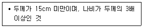
- 판석
- 각석
- 사고석
- 견치석
(정답률: 61%)
53. 시멘트의 강열감량(ignition loss)에 대한 설명으로 옳은 것은?
- 시멘트를 염산 및 탄산나트륨 용액에 넣었을 때 녹지 않고 남는 양을 나타낸다.
- 강열감량은 시멘트 중에 함유된 H2O 와 CO2의 양이다.
- 시멘트의 강열감량이 증가하면 시멘트 비중도 증가한다.
- 시멘트가 풍화하면 강열감량이 적어지므로 시멘트가 풍화된 정도를 판정하는데 이용된다.
(정답률: 53%)
54. 일반콘크리트용으로 사용되는 굵은 골재의 물리적 성질에 대한 규정내용으로 틀린 것은? (단, 부순골재, 고로 슬래그 골재, 경량골재는 제외)
- 절대건조상태의 밀도는 2.50g/cm3이상이어야 한다.
- 흡수율은 3.0%이하이어야 한다.
- 황산나트륨으로 시험한 안정성은 20%이하이어야 한다.
- 마모율은 40%이하이어야 한다.
(정답률: 58%)
55. 고로 슬래그 시멘트는 제철소의 용광로 에서 선철을 만들 때 부산물로 얻은 슬래그를 포틀랜드 시멘트 클링커에 섞어서 만든 시멘트이다. 그 특성으로 맞지 않는 것은?
- 포틀랜드 시멘트에 비해 응결시간이 느리다.
- 조기 강도가 작으나 장기 강도는 큰 편이다.
- 수화열이 크므로 매스 콘크리트에는 적합하지 않다.
- 일반적으로 내화학성이 좋으므로 해수, 하수, 공장폐수 등에 접하는 콘크리트에 적합하다.
(정답률: 66%)
56. 단위용적질량이 1680kg/m3인 굵은골재의 표건밀도가 2.81g/cm3이고, 흡수율이 6%인 경우 이 골재의 공극률은?
- 36.6%
- 40.2%
- 51.6%
- 59.8%
(정답률: 43%)
57. 콘크리트용 인공경량골재에 대한 설명으로 틀린 것은?
- 흡수율이 큰 인공경량골재를 사용할 경우 프리웨팅(pre-wetting)하여 사용하는 것이 좋다.
- 인공경량골재를 사용한 콘크리트의 탄성계수는 보통골재를 사용한 콘크리트 탄성계수보다 크다.
- 인공경량골재의 부립률이 클수록 콘크리트의 압축강도는 저하된다.
- 인공경량골재를 사용하는 콘크리트는 AE콘크리트로 하는 것을 원칙으로 한다.
(정답률: 44%)
58. 분말로 된 흑색화약을 마사와 종이테이프로 감아 도료를 사용하여 방수시킨 줄로서 뇌관을 점화시키기 위한 것을 무엇이라 하는가?
- 점화제
- 도폭선
- 도화선
- 기폭제
(정답률: 64%)
59. 포틀랜드시멘트의 클링커에 대한 설명 중 틀린 것은?
- 클링커는 단일조성의 물질이 아니라 C3S, C2S, C3A, C4F의 4가지 주요화합물로 구성되어 있다.
- 클링커의 화합물 중 C3S 및 C2S는 시멘트 강도의 대부분을 지배한다.
- C3는 수화속도가 대단히 빠르고 발열량이 크며 수축도 크다.
- 클링커의 화합물 중 C3S가 많고 C2S가 적으면 시멘트의 강도 발현이 늦어지지만 장기재령은 향상된다.
(정답률: 54%)
60. 콘크리트용 골재의 입도, 입형 및 최대치수에 관한 설명으로 틀린 것은?
- 굵은 골재의 최대치수는 질량으로 90% 이상 통과시키는 체중에서 최소치수의 체눈을 공칭치수로 나타낸 것이다.
- 골재알의 모양이 구형(舊形)에 가까운 것은 공극률이 크므로 시멘트와 혼합수의 사용량이 많이 요구된다.
- 골재의 입도는 균일한 크기의 입자만 있는 경우보다 작은 입자와 굵은 입자가 적당히 혼합된 경우가 유리하다.
- 조립률(F.M)이란 10개의 표준체를 1조로 체가름시험 하였을 때 각 체에 남은 양의 전시료에 대한 누가질량 백분율의 합계를 100으로 나눈 값으로 정의한다.
(정답률: 74%)
4과목: 토질 및 기초
61. 점착력이 5t/m2, γt=1.8/m3의 비배수상태(ø=0)인 포화된 점성토 지반에 직경 40cm, 길이 10m의 PHC 말뚝이 항타시공되었다. 이 말뚝의 선단지지력은? (단, Meyerhof 방법을 사용)
- 1.57t
- 3.23t
- 5.65t
- 45t
(정답률: 41%)
62. 그림에서 안전율 3을 고려하는 경우, 수두차 h를 최소 얼마로 높일 때 모래시료에 분사현상이 발생하겠는가?
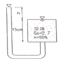
- 12.75cm
- 9.75cm
- 4.25cm
- 3.25cm
(정답률: 48%)
63. 그림과 같은 지반에 널말뚝을 박고 기초굴착을 할 때 A점의 압력수두가 3m이라면 A점의 유효응력은?
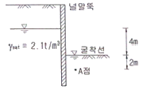
- 0.1t/m2
- 1.2t/m2
- 4.2t/m2
- 7.2t/m2
(정답률: 47%)
64. 내부마찰각이 30°, 단위중량이 1.8t/m3인 흙의 인장균열 깊이가 3m일 때 점착력은?
- 1.56t/m2
- 1.67t/m2
- 1.75t/m2
- 1.81t/m2
(정답률: 49%)
65. 다져진 흙의 역학적 특성에 대한 설명으로 틀린 것은?
- 다짐에 의하여 간극이 작아지고 부착력이 커져서 역학적 강도 및 지지력은 증대하고, 압축성, 흡수성 및 투수성은 감소한다.
- 점토를 최적함수비보다 약간 건조측의 함수비로 다지면 면모구조를 가지게 된다.
- 점토를 최적함수비보다 약간 습윤측에서 다지면 투수계수가 감소하게 된다.
- 면모구조를 파괴시키지 못할 정도의 작은 압력으로 점토시료를 압밀할 경우 건조측 다짐을 한 시료가 습윤측 다짐을 한 시료보다 압축성이 크게 된다.
(정답률: 49%)
66. 아래 표의 식은 3축 압축시험에 있어서 간극수압을 측정하여 간극수압계수 A를 계산하는 식이다. 이 식에 대한 설명으로 틀린 것은?
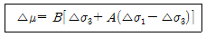
- 포화된 흙에서는 B=1 이다.
- 정규압밀 점토에서는 A값이 1에 가까운 값을 나타낸다.
- 포화된 점토에서 구속압력을 일정하게 할 경우 간극수압의 측정값과 축차응력을 알면 A값을 구할 수 있다.
- 매우 과압밀된 점토의 A값은 언제나 (+)의 값을 갖는다.
(정답률: 67%)
67. 모래지반의 현장상태 습윤 단위 중량을 측정한 결과 1.8t/m3으로 얻어졌으며 동일한 모래를 채취하여 실내에서 가장 조밀한 상태의 간극비를 구한 결과 emin=0.45, 가장 느슨한 상태의 간극비를 구한 결과 emax=0.92를 얻었다. 현장상태의 상대밀도는 약 몇 %인가? (단, 모래의 비중 Gs=2.7이고, 현장상태의 함수비 ω=10%이다.)
- 44%
- 57%
- 64%
- 80%
(정답률: 33%)
68. 그림과 같은 점토지반에 재하순간 A점에서의 물의 높이가 그림에서와 같이 점토층의 윗면으로부터 5m이었다. 이러한 물의 높이가 4m까지 내려오는데 50일이 걸렸다면, 50%압밀이 일어나는데는 몇 일이 더 걸리겠는가? (단, 10% 압밀시 시간계수 Tv0.008, 20% 압밀시 Tv=0.031, 50% 압밀시 Tv=0.197이다.)
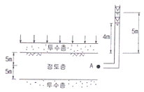
- 268일
- 618일
- 1181일
- 1231일
(정답률: 43%)
69. 그림과 같은 20x30m 전면기초인 부분보상기초 (partially compensated foundation)의 지지력 파괴에 대한 안전율은?
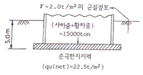
- 3.0
- 2.5
- 2.0
- 1.5
(정답률: 42%)
70. 시험종류와 시험으로부터 얻을 수 있는 값의 연결이 틀린 것은?
- 비중계분석시험 - 흙의 비중(Gs)
- 삼축압축시험 - 강도정수(c, ø)
- 일축압축시험 - 흙의 예민비(St)
- 평판재하시험 - 지반반력계수(ks)
(정답률: 62%)
71. 사면안정계산에 있어서 Fellenius법과 간편 Bishop법의 비교 설명으로 틀린 것은?
- Fellenius법은 간편 Bishop법보다 계산은 복잡하지만 계산결과는 더 안전측이다.
- 간편 Bishop법은 절편의 양쪽에 작용하는 연직 방향의 합력은 0(zero)이라고 가정한다.
- Fellenius법은 절편의 양쪽에 작용하는 합력은 0(zero)이라고 가정한다.
- 간편 Bishop법은 안전율을 시행착오법으로 구한다.
(정답률: 60%)
72. 사질토에 대한 직접 전단시험을 실시하여 다음과 같은 결과를 얻었다. 내부마찰각은 약 얼마인가?
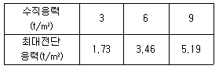
- 25°
- 30°
- 35°
- 40°
(정답률: 56%)
73. 지름 d=20cm인 나무말뚝을 25본 박아서 기초 상판을 지지하고 있다. 말뚝의 배치를 5열로 하고 각 열은 등간격으로 5본씩 박혀있다. 말뚝의 중심간격 S=1m이고 1본의 말뚝이 단독으로 10t의 지지력을 가졌다고 하면 이 무리 말뚝은 전체로 얼마의 하중을 견딜 수 있는가? (단, Converse - Labbarre식을 사용한다.)
- 100t
- 200t
- 300t
- 400t
(정답률: 55%)
74. 다음 그림에서 흙의 저면에 작용하는 단위 면적당 침투수압은?
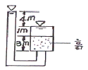
- 8t/m2
- 5t/m2
- 4t/m2
- 3t/m2
(정답률: 55%)
75. 포화된 점토지반위에 급속하게 성토하는 제방의 안정성을 검토할 때 이용해야 할 강도정수를 구하는 시험은?
- CU-test
- UU-test
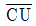
-test- CD-test
(정답률: 58%)
76. 흙의 비중이 2.60, 함수비 30%, 간극비 0.80일 때 포화도는?
- 24.0%
- 62.4%
- 78.0%
- 97.5%
(정답률: 53%)
77. 현장 도로 토공에서 모래치환법에 의한 흙의 밀도 시험을 하였다. 파낸 구멍의 체적이 V=1960cm3, 흙의 질량이 3390g이고, 이 흙의 함수비는 10%이었다. 실험실에서 구한 최대 건조 밀도 γdmax=1.65g/cm3일 때 다짐도는?
- 85.6%
- 91.0%
- 95.3%
- 98.7%
(정답률: 64%)
78. 흙 속에서 물의 흐름에 대한 설명으로 틀린 것은?
- 투수계수는 온도에 비례하고 점성에 반비례한다.
- 불포화토는 포화토에 비해 유효응력이 작고, 투수계수가 크다.
- 흙 속의 침투수량은 Darcy 법칙, 유선망, 침투해석 프로그램 등에 의해 구할 수 있다.
- 흙 속에서 물이 흐를 때 수두차가 커져 한계동수구배에 이르면 분사현상이 발생한다.
(정답률: 49%)
79. 시료가 점토인지 아닌지를 알아보고자 할 때 다음 중 가장 거리가 먼 사항은?
- 소성지수
- 소성도 A선
- 포화도
- 200번(0.075mm)체 통과량
(정답률: 58%)
80. 일반적인 기초의 필요조건으로 틀린 것은?
- 동해를 받지 않는 최소한의 근입깊이를 가져야 한다.
- 지지력에 대해 안정해야 한다.
- 침하를 허용해서는 안 된다.
- 사용성, 경제성이 좋아야 한다.
(정답률: 70%)